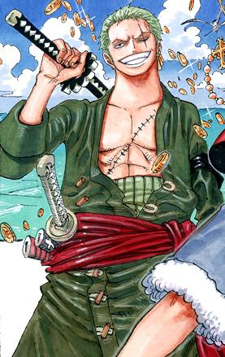
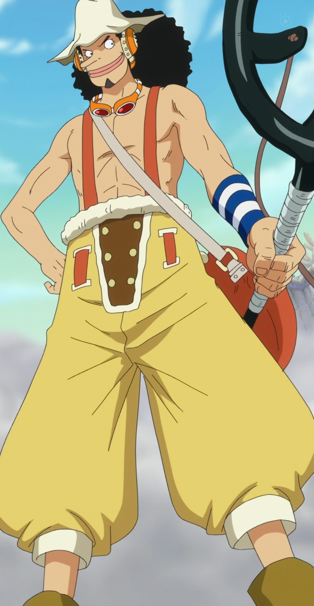
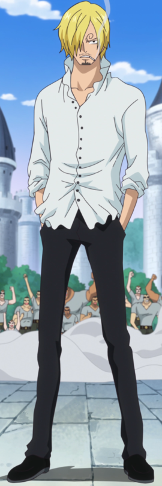
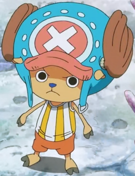
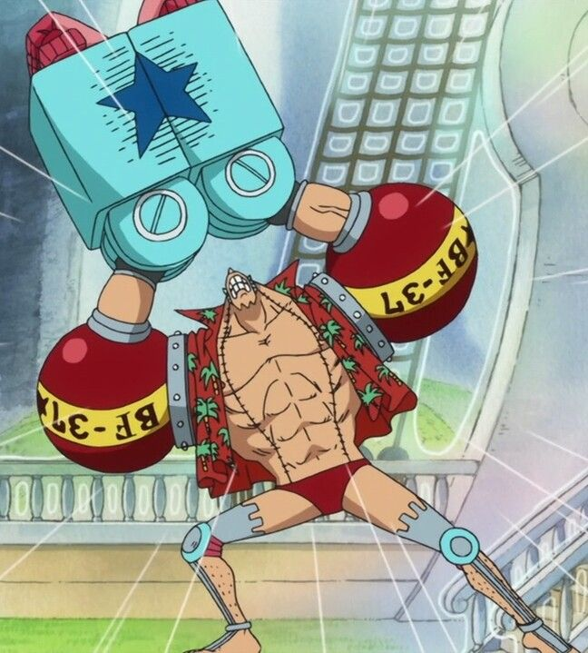
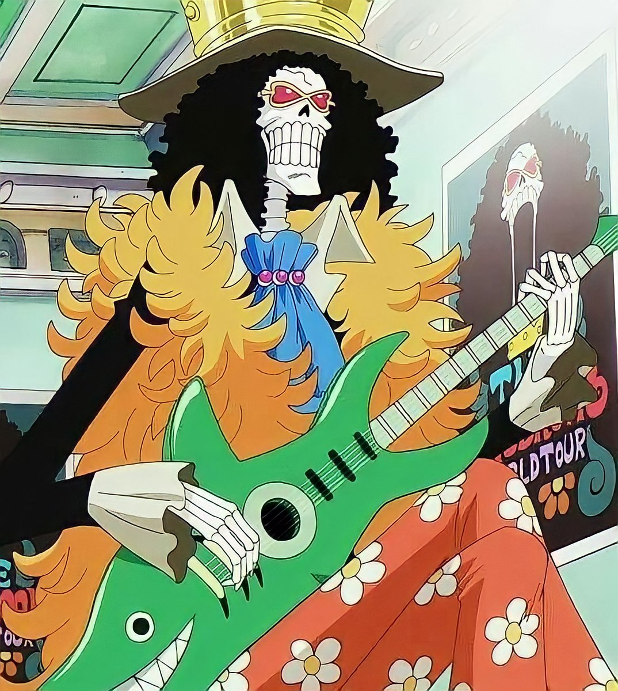
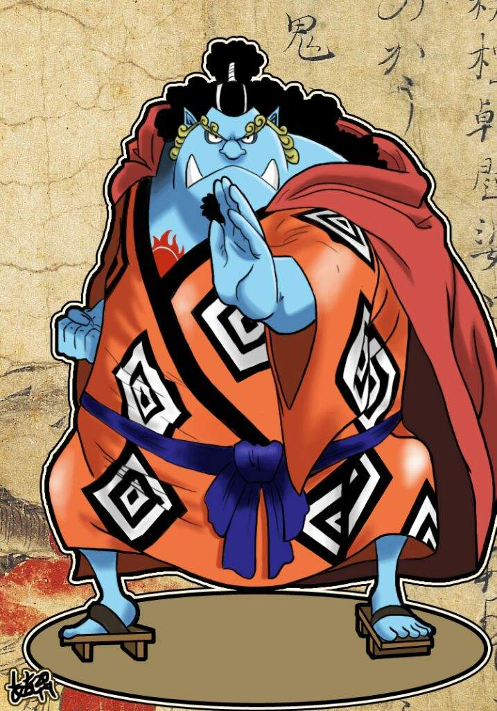

Monkey D. Luffy

Capitão dos Chapéus de Palha.
Ele é apresentado como um jovem cujo corpo ganha as propriedades de borracha após ter comido a Gomu-Gomu no Mi,
uma das várias frutas amaldiçoadas conhecidas como Akuma no Mi ou Frutas do Diabo.
Roronoa Zoro

Espadachim e Primeiro Imediato
Zoro era um caçador de piratas que por fim se torna um quando é convencido pelo Luffy a ser o primeiro membro de sua tripulação.
Sua maior característica é lutar usando três katanas em um estilo de esgrima que ele mesmo inventou, o santoryu. Enquanto Luffy almeja ser o Rei dos Piratas,
Zoro busca se tornar o maior espadachim do mundo e para isso precisa derrotar o atual detentor do título, Dracule Mihawk.
Nami

Navegadora
Nami é introduzida na narrativa como uma aliada oportunista do protagonista Monkey D. Luffy mas que possui motivos nobres por trás de suas ações ambíguas.
Após Luffy ajudá-la a resolver seus assuntos pessoais derrotando o tritão Arlong, Nami entra oficialmente para tripulação dos Piratas do Chapéu de Palha
onde atua como navegadora graças a seu conhecimento meteorológico.
Nami possui um sonho, assim como seus companheiros, e almeja cartografar o primeiro mapa-múndi.
Usopp

Atirador
Mais conhecido como "God" Usopp, é o quarto membro da tripulação e o terceiro a entrar, fazendo isso no final do Arco Vila Syrup.
Apesar de sua covardia, Usopp sonha em se tornar um corajoso guerreiro do mar como seu pai, e vive todos os dias em busca de viver à altura deste sonho.
Vinsmoke Sanji

Cozinheiro
"Perna Negra Sanji" é oficialmente o quinto membro da tripulação e o quarto a se juntar, fazendo isso no final do Arco Baratie.
Seu sonho é encontrar o All Blue, o paraíso dos chefes.
Tony Tony Chopper

Médico
Chopper é uma rena que, após comer a Hito Hito no Mi, adquiriu a habilidade de se transformar e raciocinar como os humanos.
Ele é o sexto membro e um dos poucos membros da tripulação que nasceu na Grand Line, numa ilha chamada Drum.
Seu sonho é encontrar a cura perfeita que cure todas as doenças do mundo.
Nico Robin

Arqueologa
Também conhecida como "Filha do Demônio" e "Luz da Revolução", é a única sobrevivente da ilha destruída de Ohara.
Como resultado, ela é atualmente a única pessoa no mundo com a capacidade de ler e decifrar Poneglyphs, uma habilidade que é considerada proibida e que ameaça o Governo Mundial.
Ela foi introduzida pela primeira vez como o vice-presidente da Baroque Works e antagonista secundária da Saga Alabasta, conhecida como Miss All Sunday,antes de se juntar aos Chapéus de Palha.
É a sétima integrante da tripulação e usuária da Hana Hana no Mi. Seu sonho é encontrar o Rio Poneglyph, que conta a verdadeira história.
Franky

Ele é um cyborg de 36 anos de Water 7 e foi introduzido na história como o líder da Família Franky, um grupo de desmantelamento de navios.
Ele foi originalmente chamado de "Cutty Flam" até trocar seu nome original por seu apelido a pedidos de Iceburg para esconder sua identidade.
Seu sonho era criar um 'navio dos sonhos', que pudesse viajar em qualquer oceano pelo mundo inteiro.
Carpinteiro
Brook

Músico
Também conhecido com "Soul King", é um esqueleto, usuário da Akuma no Mi Yomi Yomi no Mi. Além de músico
ele é o segundo espadachim da tripulação dos Chapéus de Palha. Seu sonho é reencontrar Laboon, uma baleia a quem fez a promessa de que retornaria para encontrá-la.
Jinbe

Timoneiro
Mais conhecido como Cavaleiro do Mar, ele é o timoneiro e o décimo membro da tripulação dos Chapéus de Palha.
Jinbe é um Tritão tubarão-baleia, ex Shichibukai e um poderoso mestre do karatê Homem-Peixe.
Seu sonho é realizar o desejo moribundo de seu ex-capitão Fisher Tiger de coexistência e igualdade entre humanos e Tritões.